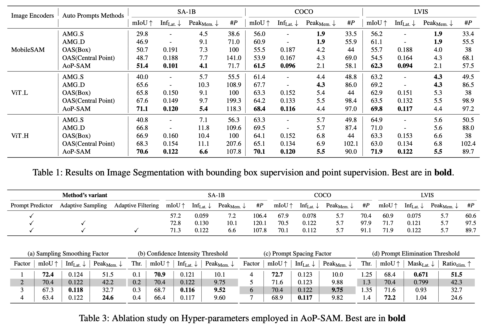

AoP-SAM: Automation of Prompts for Efficient Segmentation
Abstract
The Segment Anything Model (SAM) is a powerful foundation model for image segmentation, showing robust zero-shot generalization through prompt engineering. However, relying on manual prompts is impractical for real-world applications, particularly in scenarios where rapid prompt provision and resource efficiency are crucial. In this paper, we propose the Automation of Prompts for SAM (AoP-SAM), a novel approach that learns to generate essential prompts in optimal locations automatically. AoP-SAM enhances SAM's efficiency and usability by eliminating manual input, making it better suited for real-world tasks. Our approach employs a lightweight yet efficient Prompt Predictor model that detects key entities across images and identifies the optimal regions for placing prompt candidates. This method leverages SAM's image embeddings, preserving its zero-shot generalization capabilities without requiring fine-tuning. Additionally, we introduce a test-time instance-level Adaptive Sampling and Filtering mechanism that generates prompts in a coarse-to-fine manner. This notably enhances both prompt and mask generation efficiency by reducing computational overhead and minimizing redundant mask refinements. Evaluations of three datasets demonstrate that AoP-SAM substantially improves both prompt generation efficiency and mask generation accuracy, making SAM more effective for automated segmentation tasks.
Our contributions are as follows:
- We propose AoP-SAM, a novel approach that automatically predicts and generates prompts effectively and efficiently, eliminating the need for manual provision of prompts tailored to each general image.
- We introduce a simple yet efficient prompt prediction method that utilizes SAM's computed data to pinpoint potential prompt locations. Additionally, ASF ensures that only the most essential prompts are utilized in a coarse-to-fine selection process, thereby enhancing overall segmentation efficiency.
- Extensive experiments on three benchmarks (SA-1B, COCO, and LVIS) have shown the effectiveness of our proposed AoP-SAM, achieving state-of-the-art performance in both accuracy and efficiency.
Methodology

Overview of the AoP-SAM pipeline.
- Prompt Predictor: Utilizes a dual-encoder architecture (CNN + ViT) to process both original image and SAM's embeddings. Generates a Prompt Confidence Map (PCM) highlighting optimal regions for prompt placement.
- ASF Coarse Processing: Applies Gaussian filtering to PCM to reduce noise and identify local maxima, serving as initial prompt candidates.
- ASF Fine Filtering: Creates a Prompt Elimination Map (PEM) using cosine similarity between image features and reference masks. Removes redundant prompts, ensuring only essential ones remain for final mask generation.
- Training: Leverages SA-1B dataset with over 1B masks and prompts. Uses point prompts as ground truth with MSELoss and Adam optimization.
Key Results
Performance Highlights:
- Achieves highest mIoU scores across all datasets and encoders, outperforming methods using bounding box prompts.
- Demonstrates excellent computational efficiency with fast inference (0.122s latency) and low memory usage (6.6GB peak).
- Surpasses both baseline methods (AMG-S, AMG-D) and advanced approaches (OAS), achieving better balance between segmentation accuracy and prompt generation efficiency.
- Maintains high performance while keeping resource usage within practical limits, suitable for real-world applications.
Parameter Analysis:
- Sampling Smoothing Factor: Impacts the coverage area of Gaussian filtering; larger factors provide stronger smoothing and reduce memory usage.
- Confidence Intensity Threshold & Prompt Spacing Factor: Optimize point prompt generation from confidence maps, ensuring accurate and reliable point selection.
- Prompt Elimination Threshold: Controls the balance between efficiency and accuracy; lower thresholds increase prompt removal ratio for faster mask generation with minimal accuracy trade-off.
Poster
Acknowledgements
This website's template was designed based on the AI4CO Template. This work was supported by Institute of Information & Communications Technology Planning & Evaluation (IITP) grant funded by the Korea governments(MSIT)(No. 2022-0-01036, Development of Ultra-Performance PIM Processor Soc with PFLOPS-Performance and GByte-Memory & No.2022-0-01037, Development of High Performance Processing-In-Memory Technology based on DRAM). The authors sincerely thank Adiwena Putra for feedback on an earlier draft. AoP-SAM is built on the foundation of SAM; please adhere to the SAM license. We are thankful to all the authors for their outstanding contributions.
License
This paper is published at the AAAI Conference on Artificial Intelligence (AAAI). The copyright is held by the Association for the Advancement of Artificial Intelligence. © 2025 AAAI. All rights reserved. No datasets or supplementary materials are released with this paper. For implementation or collaboration inquiries, please contact the authors.
BibTeX
If you find our work helpful, please kindly cite us using the following reference:
@inproceedings{chen2024aopsam,
title={AoP-SAM: Automation of Prompts for Efficient Segmentation},
author={Chen, Yi and Son, Muyoung and Hua, Chuanbo and Kim, Joo-Young},
booktitle={AAAI Conference on Artificial Intelligence},
year={2024},
organization={AAAI}
}